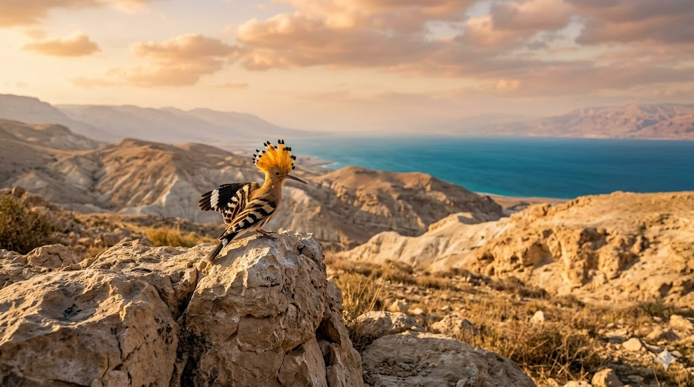

מחקר היסטורי וזואולוגי מקיף על הציפורים המייצגות את אומות העולם. לחצו על ציפור למידע מלא.
הסמל ההיסטורי של גאווה ועוררות.

נבחרה בשנות ה-60 למדינה.
סמל של חופש וכוח ריבוני.
סמל לשימור טבע וייחודיות.